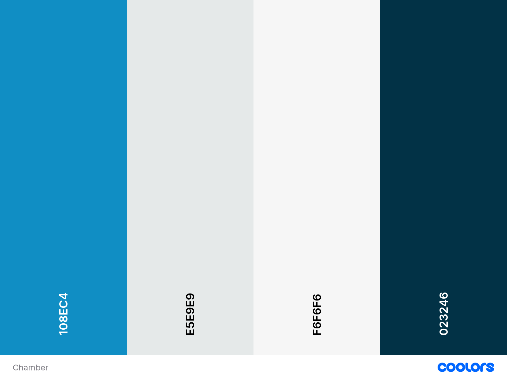

Utah County
Chamber
Home Page
Target Audience
Typography
Color Scheme
reference the elements/content to which the colors will apply

Main Color: #108EC4 (Blue NCS) Main repitition color.
Accent Color: #E5E9E9 (Platinum) Light accent.
Background Color: #F6F6F6 (Cultured) Backgrounds.
Contrast Color: #023246 (Prussian Blue) Dark contrast.